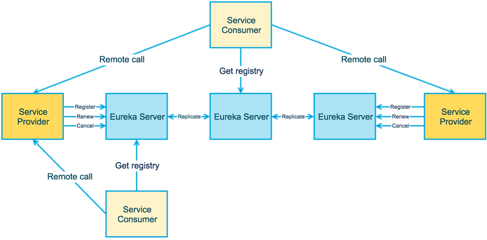
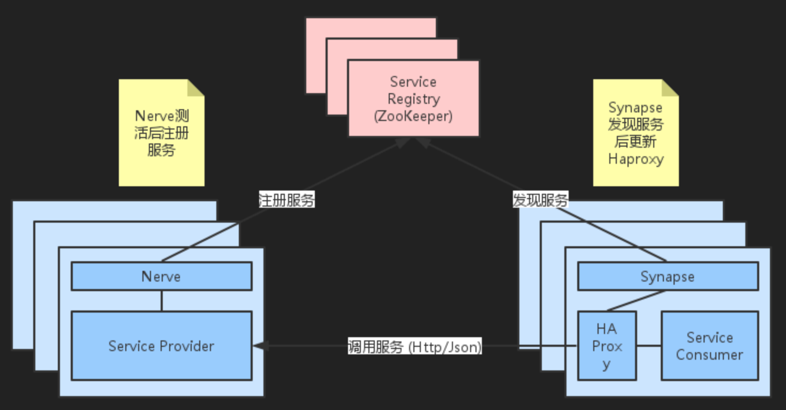
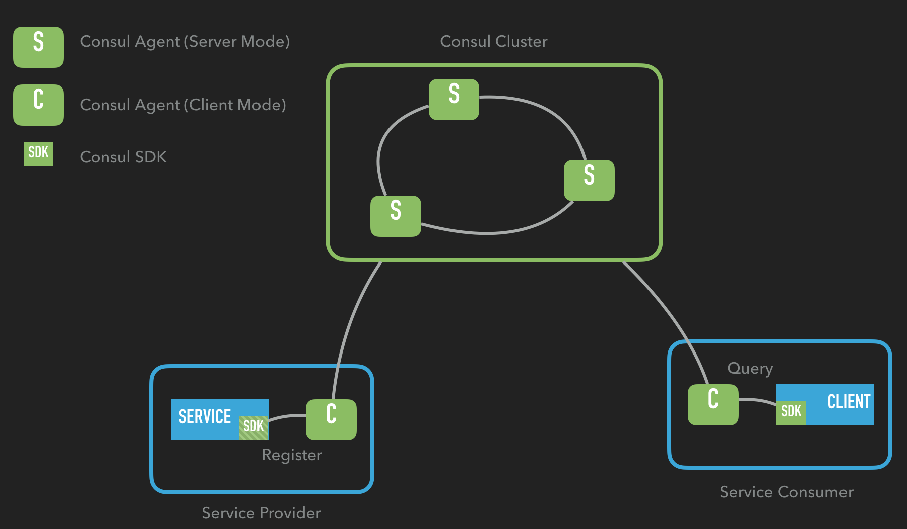
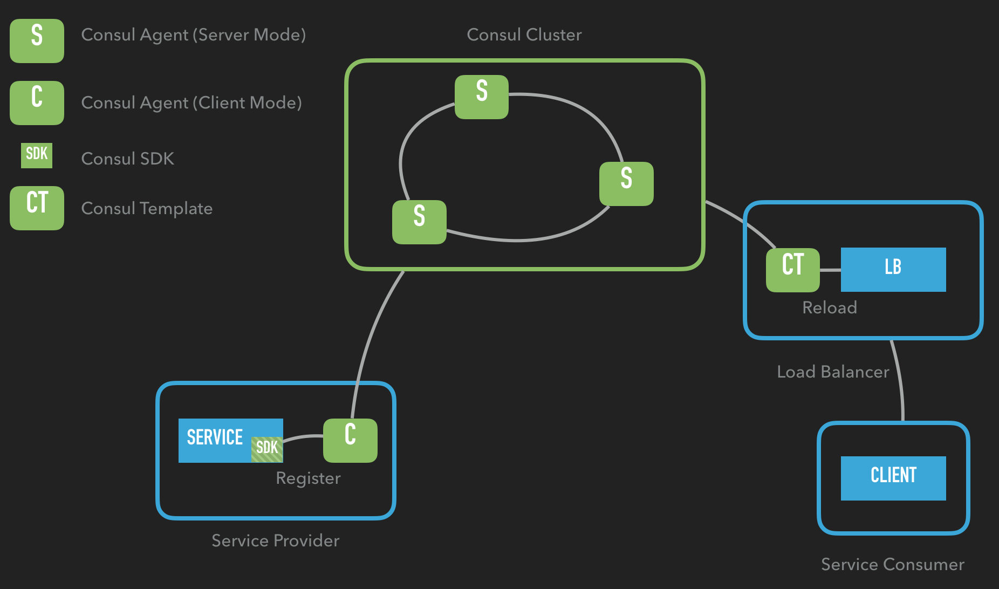

<!DOCTYPE HTML>
<html>
<head><meta name="generator" content="Hexo 3.9.0">
  <meta charset="utf-8">
  <meta http-equiv="X-UA-Compatible" content="IE=edge">
  <meta name="apple-mobile-web-app-capable" content="yes">
  <meta name="apple-mobile-web-app-status-bar-style" content="black">
  <meta name="google-site-verification" content>
  
  <title>微服务化改造系列之二：服务注册中心</title>
  <meta name="author" content="Emac">
   <meta name="description" content="前情概要：微服务化改造系列之一：总览

服务注册中心概述这篇文章是微服务化改造系列的第二篇，主题是服务注册中心。作为微服务架构最基础也是最重要的组件之一，服务注册中心本质上是为了解耦服务提供者和服务消费者。对于任何一个微服务，原则上都应存在或者支持多个提供者，这是由微服务的分布式属性决定的。更进一步">
  

  <meta property="og:title" content="微服务化改造系列之二：服务注册中心">
  <meta name="viewport" content="width=device-width, initial-scale=1, maximum-scale=1">
  <meta property="og:site_name" content="Emac">
 <meta property="og:image" content="undefined">
  
  <link href="/apple-touch-icon-precomposed.png" sizes="180x180" rel="apple-touch-icon-precomposed">
  <link rel="alternate" href="/atom.xml" title="Emac" type="application/atom+xml">
  <link rel="stylesheet" href="//cdn.bootcss.com/bootstrap/3.3.6/css/bootstrap.min.css">
  <link rel="stylesheet" href="//cdn.bootcss.com/font-awesome/4.5.0/css/font-awesome.min.css">
  <link rel="stylesheet" href="/css/m.min.css">
  <link rel="icon" type="image/x-icon" href="/favicon.ico">
</head>
</html>
<body>
  <div id='wx_pic' style='display:none;'></div>
  <div id="main">
    <div class="behind">
      <div class="back">
        <a href="/" class="black-color"><i class="fa fa-times" aria-hidden="true"></i></a>
      </div>
      <div class="description">
        &nbsp;拾贝
      </div>
    </div>
    <div class="container">
      

  <article class="standard post">
    <div class="title">
      
  
    <h1 class="page-title center">
        微服务化改造系列之二：服务注册中心
    </h1>
  


    </div>
    <div class="meta center">
      
<time datetime="2016-11-19T16:00:00.000Z">
  <i class="fa fa-calendar"></i>&nbsp;
  2016-11-20
</time>


    
    &nbsp;
    <i class="fa fa-tag"></i>&nbsp;
    <a href="/categories/arch/">arch</a>


    
    &nbsp;
    <i class="fa fa-tag"></i>&nbsp;
    <a href="/tags/原创/">原创</a>·<a href="/tags/微服务/">微服务</a>


    </div>
    <hr>
    <div class="picture-container">
      
    </div>
    <blockquote>
<p>前情概要：<a href="http://emacoo.cn/arch/microservice-overview">微服务化改造系列之一：总览</a></p>
</blockquote>
<h2 id="服务注册中心概述"><a href="#服务注册中心概述" class="headerlink" title="服务注册中心概述"></a>服务注册中心概述</h2><p>这篇文章是微服务化改造系列的第二篇，主题是服务注册中心。作为微服务架构最基础也是最重要的组件之一，服务注册中心本质上是为了解耦服务提供者和服务消费者。对于任何一个微服务，原则上都应存在或者支持多个提供者，这是由微服务的分布式属性决定的。更进一步，为了支持弹性扩缩容特性，一个微服务的提供者的数量和分布往往是动态变化的，也是无法预先确定的。因此，原本在单体应用阶段常用的静态LB机制就不再适用了，需要引入额外的组件来管理微服务提供者的注册与发现，而这个组件就是服务注册中心。</p>
<p>设计或者选型一个服务注册中心，首先要考虑的就是服务注册与发现机制。纵观当下各种主流的服务注册中心解决方案，大致可归为三类：</p>
<ul>
<li>应用内：直接集成到应用中，依赖于应用自身完成服务的注册与发现，最典型的是Netflix提供的<a href="https://github.com/Netflix/eureka" target="_blank" rel="noopener">Eureka</a></li>
<li>应用外：把应用当成黑盒，通过应用外的某种机制将服务注册到注册中心，最小化对应用的侵入性，比如Airbnb的<a href="http://nerds.airbnb.com/smartstack-service-discovery-cloud/" target="_blank" rel="noopener">SmartStack</a>，HashiCorp的<a href="https://www.consul.io/" target="_blank" rel="noopener">Consul</a></li>
<li>DNS：将服务注册为DNS的SRV记录，严格来说，是一种特殊的应用外注册方式，<a href="https://github.com/skynetservices/skydns" target="_blank" rel="noopener">SkyDNS</a>是其中的代表</li>
</ul>
<p><em>注1：对于第一类注册方式，除了Eureka这种一站式解决方案，还可以基于ZooKeeper或者Etcd自行实现一套服务注册机制，这在大公司比较常见，但对于小公司而言显然性价比太低。</em></p>
<p><em>注2：由于DNS固有的缓存缺陷，本文不对第三类注册方式作深入探讨。</em></p>
<p>除了基本的服务注册与发现机制，从开发和运维角度，至少还要考虑如下五个方面：</p>
<ul>
<li>测活：服务注册之后，如何对服务进行测活以保证服务的可用性？</li>
<li>负载均衡：当存在多个服务提供者时，如何均衡各个提供者的负载？</li>
<li>集成：在服务提供端或者调用端，如何集成注册中心？</li>
<li>运行时依赖：引入注册中心之后，对应用的运行时环境有何影响？</li>
<li>可用性：如何保证注册中心本身的可用性，特别是消除单点故障？</li>
</ul>
<p>以下就围绕上述几个方面，简单分析一下Eureka，SmartStack，Consul的利弊。</p>
<h3 id="Eureka"><a href="#Eureka" class="headerlink" title="Eureka"></a>Eureka</h3><p></p>
<p>从设计角度来看，Eureka可以说是无懈可击，注册中心、提供者、调用者边界清晰，通过去中心化的集群支持保证了注册中心的整体可用性，但缺点是Eureka属于应用内的注册方式，对应用的侵入性太强，且只支持Java应用。</p>
<h3 id="SmartStack"><a href="#SmartStack" class="headerlink" title="SmartStack"></a>SmartStack</h3><p></p>
<p>SmartStack可以说是三种方案中最复杂的，涉及了ZooKeeper、HAProxy、Nerve和Synapse四种异构组件，对运维提出了很高的要求。它最大的好处是对应用零侵入，且适用于任意类型的应用。</p>
<h3 id="Consul"><a href="#Consul" class="headerlink" title="Consul"></a>Consul</h3><p></p>
<p>Consul本质上属于应用外的注册方式，但可以通过SDK简化注册流程。而服务发现恰好相反，默认依赖于SDK，但可以通过Consul Template（下文会提到）去除SDK依赖。</p>
<h2 id="最终方案"><a href="#最终方案" class="headerlink" title="最终方案"></a>最终方案</h2><p>最终我们选择了Consul作为服务注册中心的实现方案，主要原因有两点：</p>
<ol>
<li>最小化对已有应用的侵入性，这也是贯穿我们整个微服务化改造的原则之一</li>
<li>降低运维的复杂度，Consul Agent既可以运行在服务器模式，又可以运行在客户端模式</li>
</ol>
<h3 id="Consul-Template"><a href="#Consul-Template" class="headerlink" title="Consul Template"></a>Consul Template</h3><p>上文提到使用Consul，默认服务调用者需要依赖Consul SDK来发现服务，这就无法保证对应用的零侵入性。所幸通过<a href="https://github.com/hashicorp/consul-template" target="_blank" rel="noopener">Consul Template</a>，可以定时从Consul集群获取最新的服务提供者列表并刷新LB配置（比如nginx的upstream），这样对于服务调用者而言，只需要配置一个统一的服务调用地址即可。改造后的调用关系如下：</p>
<p></p>
<h3 id="Spring-Cloud-Consul"><a href="#Spring-Cloud-Consul" class="headerlink" title="Spring Cloud Consul"></a>Spring Cloud Consul</h3><p>由于我们选用了Spring Boot作为统一的微服务实现框架，很自然的，可以利用Spring Cloud提供的Consul组件进一步简化服务注册流程，省去额外的服务提供端的Consul配置。</p>
<h2 id="参考"><a href="#参考" class="headerlink" title="参考"></a>参考</h2><ul>
<li><a href="https://www.consul.io/docs/index.html" target="_blank" rel="noopener">CONSUL DOCUMENTATION</a></li>
<li><a href="https://github.com/hashicorp/consul-template" target="_blank" rel="noopener">consul-template</a></li>
<li><a href="http://cloud.spring.io/spring-cloud-consul/" target="_blank" rel="noopener">Spring Cloud Consul</a></li>
<li><a href="http://cloud.spring.io/spring-cloud-netflix/spring-cloud-netflix.html" target="_blank" rel="noopener">Spring Cloud Netflix</a></li>
<li><a href="http://nobodyiam.com/2016/06/25/dive-into-eureka/" target="_blank" rel="noopener">Dive into Eureka</a></li>
<li><a href="http://nerds.airbnb.com/smartstack-service-discovery-cloud/" target="_blank" rel="noopener">SmartStack: Service Discovery in the Cloud</a></li>
<li><a href="http://jasonwilder.com/blog/2014/02/04/service-discovery-in-the-cloud/" target="_blank" rel="noopener">Open-Source Service Discovery</a></li>
</ul>


  </article>
  </script>
  <script async src="//busuanzi.ibruce.info/busuanzi/2.3/busuanzi.pure.mini.js"></script>
  <span id="busuanzi_container_site_pv">本站总访问量<span id="busuanzi_value_site_pv"></span>次</span>


    </div>
  </div>
  <footer class="page-footer"><div class="clearfix">
</div>
<div class="right-foot container">
    <div class="firstrow">
        <a href="#top" >
        <i class="fa fa-arrow-right"></i>
        </a>
        © emacoo.cn 2015-2020
    </div>
    <div class="secondrow">
        <a href="https://github.com/gaoryrt/hexo-theme-pln">
        
        </a>
    </div>
</div>
<div class="clearfix">
</div>
</footer>
  <script src="//cdn.bootcss.com/jquery/2.2.1/jquery.min.js"></script>
<script src="/js/search.js"></script>
<script type="text/javascript">

// comments below to disable loading animation
function revealOnScroll() {
  var scrolled = $(window).scrollTop();
  $(".excerpt, .index-title, .index-meta, p").each(function() {
    var current = $(this),
      height = $(window).outerHeight(),
      offsetTop = current.offset().top;
    (scrolled + height + 50 > offsetTop) ? current.addClass("animation"):'';
  });
}
$(window).on("scroll", revealOnScroll);
$(document).ready(revealOnScroll)

// disqus scripts


// dropdown scripts
$(".dropdown").click(function(event) {
  var current = $(this);
  event.stopPropagation();
  $(current).children(".dropdown-content")[($(current).children(".dropdown-content").hasClass("open"))?'removeClass':'addClass']("open")
});
$(document).click(function(){
    $(".dropdown-content").removeClass("open");
})

// back to top scripts
$("a[href='#top']").click(function() {
  $("html, body").animate({ scrollTop: 0 }, 500);
  return false;
});


var path = "/search.xml";
searchFunc(path, 'local-search-input', 'local-search-result');

</script>

</body>
</html>
